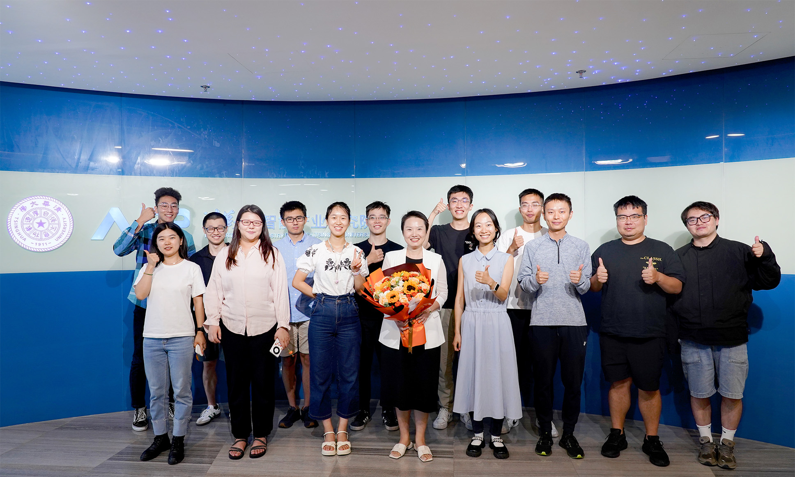
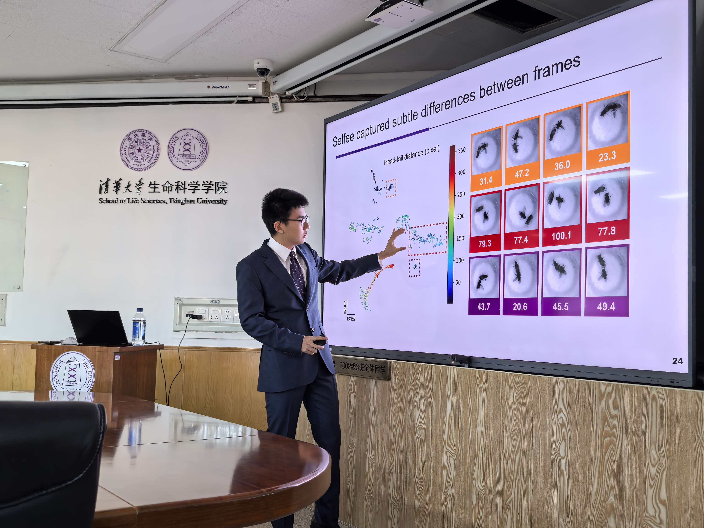

Timeline
2025.02 - Present
PostDoc Researcher at Tsinghua AIR
Working as a Postdoctoral Researcher at Tsinghua AIR, focusing on AI4Science research using unsupervised learning and synthetic data to solve complex pharmaceutical and biological problems.

2020.09 – 2024.12
Ph.D. in Neuroscience
Pursued Ph.D. studies in Neuroscience at the IDG/McGovern Institute for Brain Research, Tsinghua University.

2016.09 – 2020.06
B.S. in Life Sciences
Completed Bachelor's degree in Life Sciences at the School of Life Sciences, Tsinghua University.